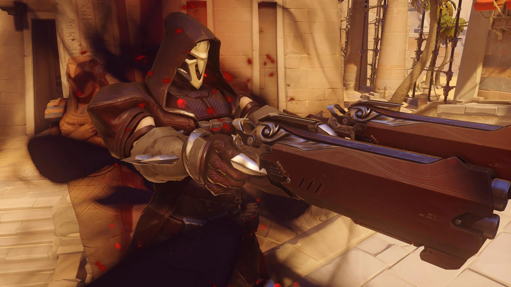

About Reaper
Reaper is a lethal and relentless mercenary in Overwatch who uses dual shotguns to eliminate his enemies with brutal efficiency.
Reaper's In Game Model
Reaper's Characteristics
- He's ruthless
- His style is dark
- His weapon's are shotgun's
Reaper's Team
Reaper works with other well trained and unique mercenarry's. Such as Sombra, Moira, WidowMaker, and DoomFist. Click on the links below to learn more about them: